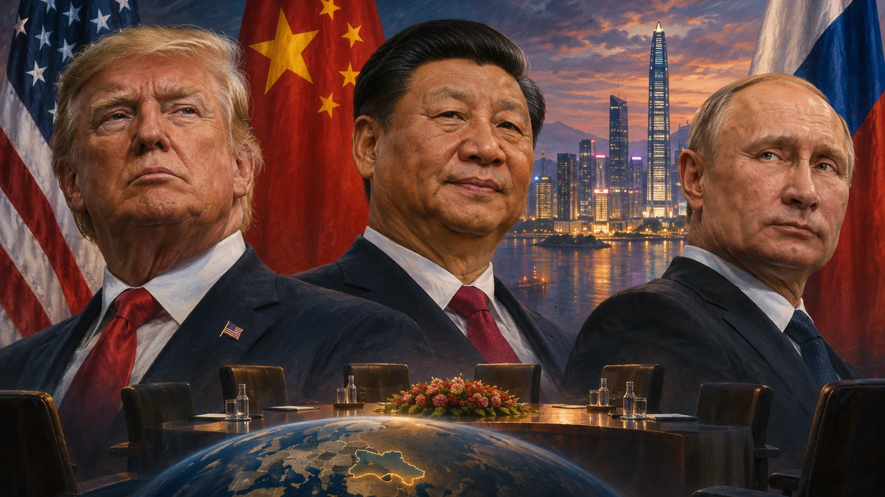

Utenriks
Stormaktene lover fred – men Ukraina står uten løsning
Trump, Xi og Putin ble enige om dialog om atomrisiko og FN-reform. Erklæringen ga ingen konkret løsning på krigen i Ukraina.

Donald Trump, Xi Jinping og Vladimir Putin møttes torsdag 19. november i Shenzhen i Kina. Etter møtet offentliggjorde de tre landene en felles erklæring som legger vekt på å redusere atomrisiko og reformere FN. Møtet samlet lederne for tre av verdens største atommakter ved samme bord, men den korte teksten gir ingen konkret løsning på krigen i Ukraina.
Kilde: Reuters, 19. november.
Erklæringen har fire hovedpunkter: reform av FN, økt produksjon og tilgang på raffinerte petroleumsprodukter, respekt for statlige lederes immunitet og videre samtaler om atomvåpen. Lederne fastslår at en atomkrig aldri må utkjempes. Det er en politisk formulering, ikke en verifiserbar avtale om å redusere antallet stridshoder.
Kilde: Erklæringens ordlyd gjengitt av Anadolu, 19. november.
Formuleringen om immunitet og internasjonale domstoler er politisk betydningsfull. Erklæringen sier at internasjonale straffedomstoler ikke skal misbruke sin jurisdiksjon, men den fastslår ikke at konkrete etterforskninger skal stanses. Forholdet mellom staters suverenitet og internasjonal straffeforfølgelse er dermed fortsatt omstridt.
Kilde: Erklæringens punkt 3.
Det bemerkelsesverdige er også det som mangler. Ingen felles tidsplan for fredsforhandlinger i Ukraina og ingen kontrollmekanisme for nye atomavtaler ble lagt fram i erklæringen. Å møtes kan redusere faren for misforståelser, men diplomatiske signaler må skilles fra forpliktende resultater.
Kilde: Reuters om møtet og uenighetene.
Hva vet vi – og hva vet vi ikke?
Dokumentet inneholder fire politiske punkter og ingen bindende avtale om Ukraina eller verifiserbar reduksjon av atomvåpen. Eventuelle senere forpliktelser må rapporteres separat.